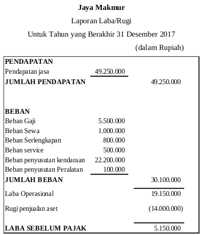

Menyusun Laporan Laba/Rugi
Sumber yang digunakan untuk menyusun laporan Laba/Rugi adalah daftar saldo setelah penyesuaian. Laporan laba/rugi berisi akun-akun yang ada di elemen pendapatan dan beban . Jika nilai rupiah pendapatan lebih besar daripada beban maka perusahaan memperoleh laba, sebaliknya jika nilai rupiah beban lebih besar daripada pendapatan maka perusahaan mengalami kerugian.
Penyusunan Laporan laba rugi melalui beberapa langkah, yaitu sebagai berikut.
Manfaat:
- Langkah pertama yang dilakukan adalah memindahkan semua akun pendapatan beserta nilai rupiah yang menyertainya yang di daftar saldo kedalam form laporan laba rugi . Jumlahkan semua akun pendapatan sehingga didapatkan pendapatan bersih.
- Langkah kedua adalah memindahkan semua akun beban beserta nilai rupiah yang menyertainya yang ada di daftar saldo ke dalam form laporan laba rugi tepat di bawah akun-akun pendapatan. Jumlahkan semua akun beban .
- Langkah ketiga adalah mencari selisih antara total pendapatan dan total beban . Ingat,jika nilai rupiah pendapatan lebih besar daripada beban maka perusahaan memperoleh laba, sebaliknya jika nilai rupiah beban lebih besar daripada pendapatan maka perusahaan mengalami kerugian.
Agar lebih jelas perhatikan contoh laporan laba/rugi yang disusun berdasarkan informasi daftar saldo setelah penyesuaian Jaya Makmur berikut ini:
